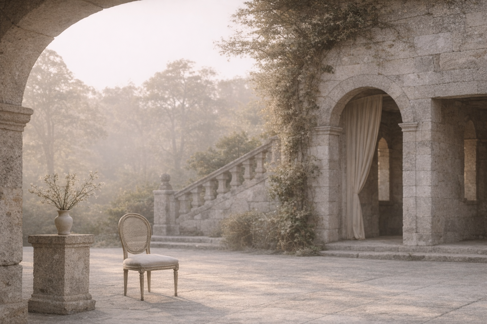

Mirada editorial
La dirección no se improvisa.
Se construye desde la observación, la calma y una mirada clara.
Antes de tomar decisiones, observamos. El espacio, el contexto, las personas y el ritmo real de cada boda en Galicia o Madrid.
No trabajamos desde la prisa ni desde la acumulación de ideas, sino desde la escucha, la comprensión y una dirección consciente.
No seguimos tendencias por inercia ni imponemos una estética. Interpretamos cada boda desde su propio lenguaje.
Creemos en la belleza que se sostiene en el tiempo, en los detalles bien pensados y en una narrativa coherente.
Acompañamos a parejas que valoran el proceso tanto como el resultado. Personas que entienden una boda como una experiencia cuidada, no como una acumulación de decisiones rápidas.
Cuando hay confianza, el resultado se reconoce como propio.
Cada boda comienza mucho antes del día señalado. Definimos una dirección clara antes de tomar decisiones.
Nada se adelanta. Nada se improvisa. Cuando el proceso está bien dirigido, todo fluye.
El verdadero lujo es no tener que preocuparse.
Trabajamos con un número limitado de parejas cada temporada.
Solicitar una conversación